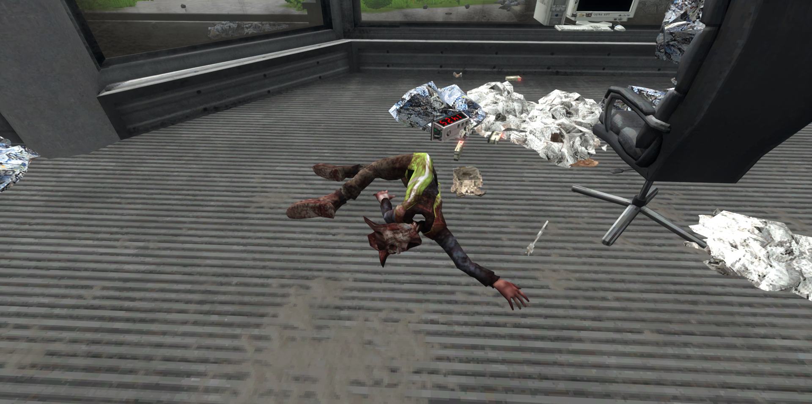
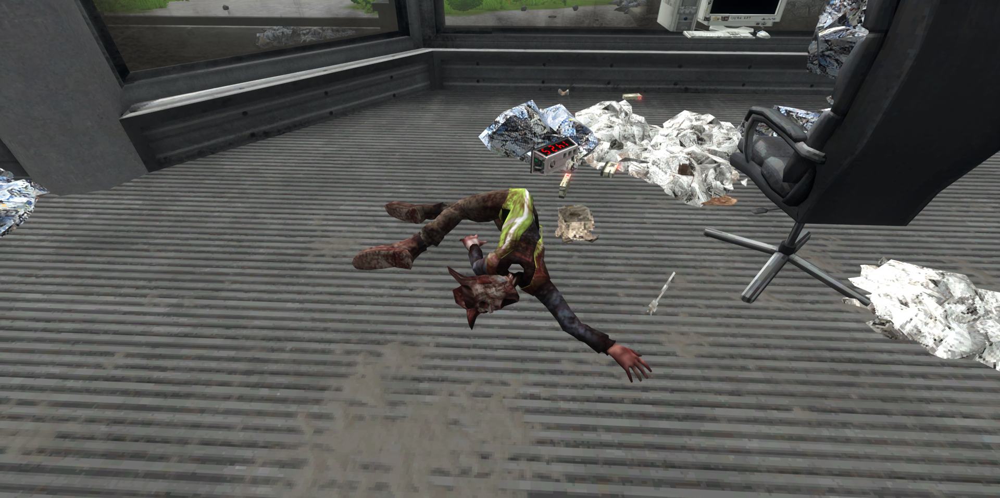

Structures
Description:
In the VOTV map there are tons of structures that are placed around, each containing lots of interesting POI (Point of Interest) and items. Some structures are also related to some events as well. If you'd like the search and find some of these structures you can use the interactive map in order to locate them, just keep in mind that some of them may only accessed through an event.
Bridge
Description:
The Bridge structure is found very commonly across the map allowing the player and other entities cross the river without trouble.
Powerline Pole
Description:
The Powerline Pole structure is what is used to transfer power from the Transformers to the Power Generator these can be found all over the map with the power cables attached to them. If you delete any Powerline structure you will innevitably cut off power from that specific Transformer.
Satellite Dish
Description:
The Satellite Dish is a structure that surprisingly is unrelated to catching and downloading signals as if deleted you are still able to function and play the game normally, each Satellite Dish has a server and a Command Console for you to repair and utilize if ever broken. The Satellite Dish structure is found all over the world in a uniform pattern that is squarish.
Transformer
Description:
There are only three Transformer structures on the map, inside each of these rooms you can find items and objects as well as the Transformer itself. On the outside usually are a couple benches with an open pathway.
Fence
Description:
The Fence structure surrounds many areas of the map including the Closed Up Forest, Stonehenge, Danger Forest, The Hole, Bomb Shelter, and the entire map in general. It is tall and cannot be climbed by the player except for bypassing it.
Firetower Outpost
Description:
The Firetower Outposts are giant wooden outposts that serve to keep watch of outside movement. The Firetower Outposts can be found outside the invisible barrier and placed uniformly. However in game they do not serve any purpose yet.
Radio Tower
Description:
The Radio Tower is a very tall metallic tower with 4 bright red lights to signify where the Main Base is at no matter where you are in the world. This is primarily used for resetting the connection to the scientists in case they can't locate you. There is also a hanging mannequin off to the side.
Event Pole
Description:
The Event Pole structure can be found in a lot of places, it is used to signify a possible event that can occur in that area.
Power Generator
Description:
The structure is a giant generator that pulls power from all 3 Transformers from across the map and generates more power for the base.
Bunker
Description:
The Bunker, which is a one chambered room that can only be accessed by buying or finding a hook, then using the hook to grab the keycard thats laying on the steps so you can always open the first set of doors. For the second set of doors you will need a password changer. Inside the chamber is a bunch of items, supply boxes, a bunch of books, metal desks and tables, and a lot of trash. There is a rusty door that is boarded up but essentially it will be replaced with another door in future versions.
Main Base
Description:
The main base is the general main area where the player resides in.
 

Bomb Shelter
Description:
The Bomb Shelter is a small fenced structure. This structure has a lot of items and props on top with paper all spilled out in a huge mess, there are a couple useful tools and some supply boxes. It also has an impenetrable green door that, if attempted to destroy, will crash your game. If you are to access the bottom part, you will discover some supply boxes, several empty rooms, 4 bagged up corpses, and as well as a bloodied chainsaw.
Sewer
Description:
The Sewer structure is a small sewer system with some large shrimp placed uniformly across the small underwater chamber. Its innaccessible as you will need to delete the metal grate thats blocking it.
The Hole
Description:
Another small fenced landmark similar to the Bomb Shelter except with a different set of items, it has some supply boxes, in the middle is a giant hole that used to go very deep and lead down to the Soltomia Entity. The hole as of current versions has two cutout parts that eventually lead down to the void. The Hole emits a deep bassy sound when near. It used to have an auto playing radio that would play music from Half Life 2 but in the newer versions the radio has since been removed. There is also a frozen model of a Furfur Entity but with a modified cigar and it is painted entirely green with the text above it "Weedigo" towards the bottom and outside of the hole.
Stonehenge
Description:
Stonehenge is described to be a large area completely fenced off in a thick forest, in the middle it has large stone slabs or columns placed somewhat uniformly to form something that looks like the Stonehenge from real life. There are several supply boxes including some MRES and a shovel sitting next to the structure. There are several bone props including a skull scattered all over.
Small Graveyard
Description:
The Small Graveyard has a cross and a tombstone that are both unmarked or has unknown recipients, if the AB or Antibreather finds you there it will aggressively attack you.
Fence Opening
Description:
An opening to the fence that surrounds the entirety of the general world, it allows you to explore further until you hit the invisible red barriers.
Circle of Benches
Description:
The Circle of Benches structure consists of a few benches as well as a fallen over sign. It has a circular pathway with a light in the middle.
Guardpost
Description:
A small building with a desk, a couple items that include gas cans, food, and a tile.
Secret Staircase
Description:
Stairs that lead to a seemingly empty frame of some sort, this structure has no purpose.
SCP-432 Room
Description:
A giant room full of uniformly placed SCP-432 Objects across each side. To access you must find all 9 tiles and place them on the SCP-432 Object in the world, from there you must either noclip or glitch into the box itself so that the portal that is inside will teleport you inside the room.
Wooded Shack
Description:
An delapitated wooden shack that is barred on the outside, if inside you will encounter a red Ariral tree with a shovel and animal skull.
Ariral Picnic
Requires Ariral Picnic Event
Description:
Consists of 2 Warp Arrows, a small picnic of 2 baskets and various food items, some notable items that you might find are the shrimp burger and Brynfruit.

Ariral Treehouse
Requires Ariral Treehouse Event
Description:
The Ariral Treehouse structure consists of three main parts, the first one being the 2 Warp Arrows present, the actual treehouse itself, and the campfire which is used to signify its appearance in the game through the use of smoke. The treehouse will be built over a period of 4 days each day bringing a new stage or version of the treehouse. In the older versions of the game you used to be able to grab items from the various stages but that has since been changed to having all the special items such as night vision goggles, water pressure guns, posters, and some Ariral items that include the Arir phone, pillow cushions, heater, chest, light, and campfire canister, to spawn at the last stage.

Erie and Argemia Statues
Description:
Two giant unbreakable grey statues that are representations or depictions of the character Erie from AEWVS and Argemia from VOTV in the EternityDev Universe.
Crashed Ariral Tp Chamber
Requires Shorts Arir Tp Event
Description:
A delapitated chamber with a teleport box inside, the structure also includes 2 decapitated Ariral legs, a gravity gun, and 2 shorts Ariral logos.
Ritual Altar
Requires Ritual Warp Event
Description:
A small twin island that consists of a bridge, some lights, 4 obelisks for you to place the 4 elemental runes in, a stone altar in the back center with a ritual knife on top, a demonic floor in the center, a stone frame that goes across, and behind the stone altar is the buried Fire Rune Slab. This landmark is located out of bounds in the direction of Victor Satellite Dish and below the tip of the corner of the map. If you were to fall off you will be teleported above the Small Graveyard Landmark.
Abandoned Well
Description:
A boarded up abandoned well that goes very deep, has a bunch of skeleton props on the bottom.
Shroomcircle
Description:
A ring of large white mushrooms that can spawn anywhere and randomly. Inside the ring you can dig up a animal skull.
AB Cave
Description:
A sealed off cave that has a skull and a burger at the beginning. To unlock it, you must trigger the Wolfgang Awakening Event. When unlocked, houses two large nests as well as a deeper part of the cave, untitled_152, that you can access. There are several items that you can find within the nests.